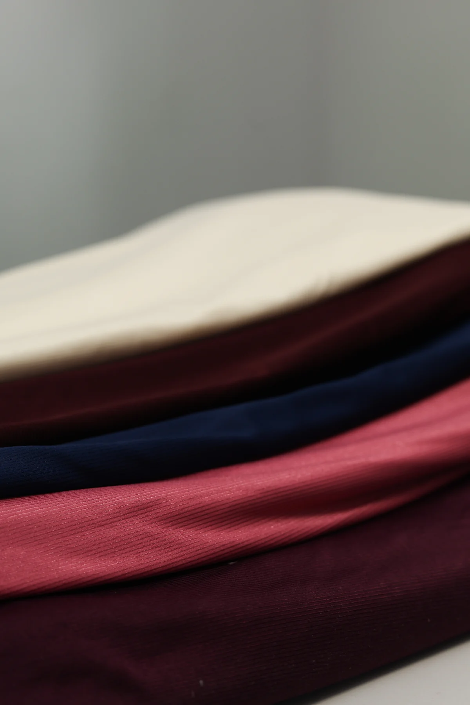
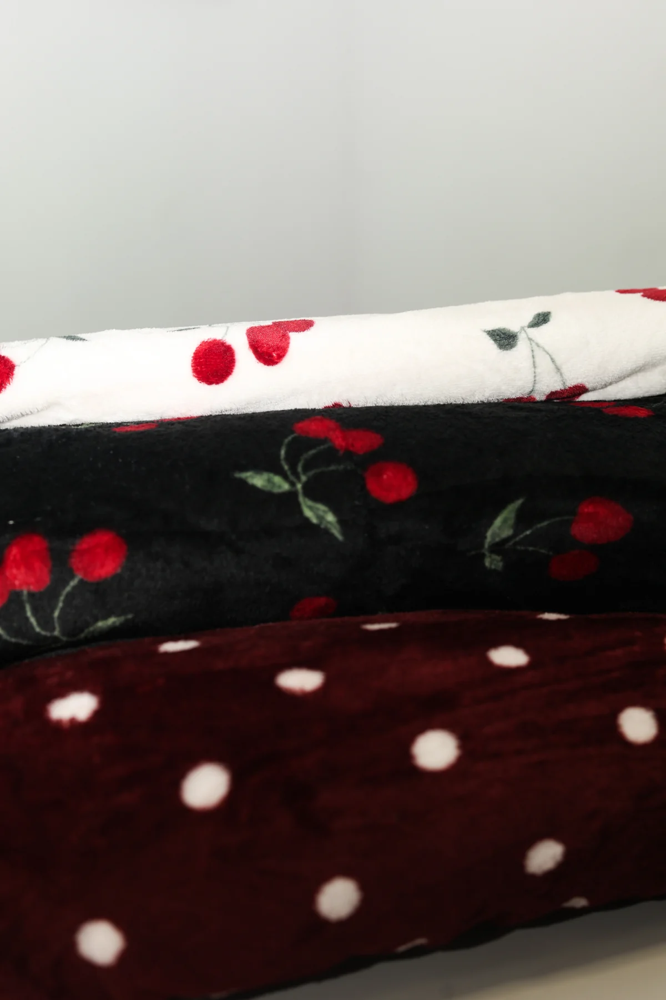
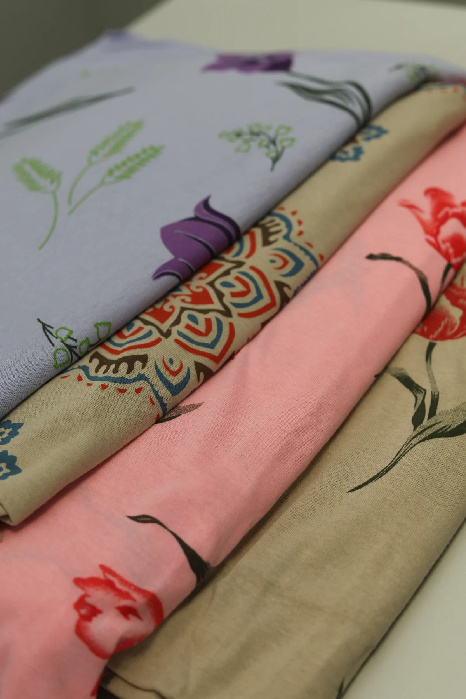
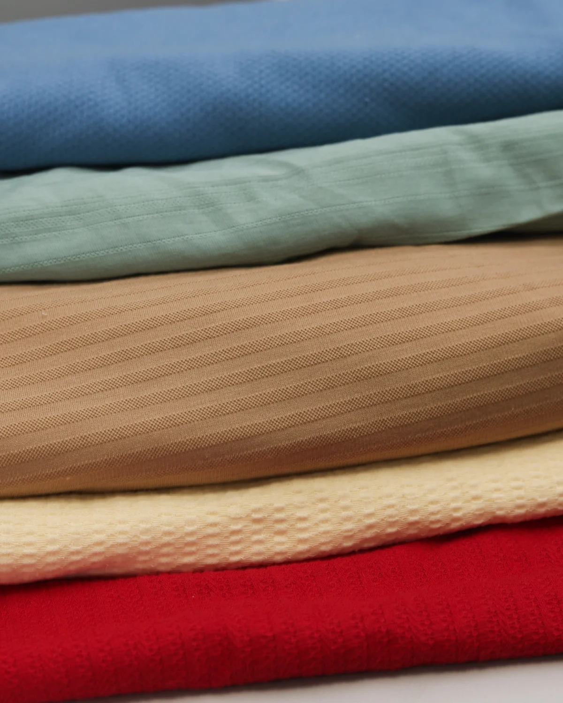

Poliamida
Para prática esportiva, peças de banho e moda íntima, com conforto e alta performance.
Solicitar informaçõesAtacado têxtil · Brusque, Santa Catarina
Tecidos para confecções e marcas, com pedidos no atacado a partir de 30 kg por material. Também atendemos no varejo, a partir de 5 kg.
Tecidos, texturas e acabamento para a sua produção.
01 · Por que a Voss
Material conferido antes de sair, separado por artigo e por tamanho.
Quem responde conhece o estoque e a aplicação de cada material.
Poliamida, fleece, malhas lisas, estampadas, caneladas, tecido plano e mais.
A partir de 5 kg no varejo e 30 kg no atacado, por material.
Acompanhamos desde o primeiro pedido até a reposição do seu material.
Despacho em até 48h úteis, com envio para todo o Brasil.
02 · Materiais
Quatro linhas em destaque. O catálogo completo reúne 26 materiais, com tamanho e especificação item a item.

Para prática esportiva, peças de banho e moda íntima, com conforto e alta performance.
Solicitar informações

Personalidade, criatividade e variedade para coleções exclusivas.
Solicitar informações
Texturas e relevos que dão mais personalidade a diferentes peças.
Solicitar informaçõesCores, estampas e gramaturas variam conforme o estoque da semana. Consulte a disponibilidade antes de fechar a coleção.
Ver catálogo completo03 · Processo
01
Definimos junto com você o artigo e a quantidade desejada que melhor se adequa à sua necessidade.
02
Com a escolha do material, partimos para a cotação do frete, onde escolhemos a melhor proposta para a sua região.
03
O pedido é separado, conferido e embalado para seguir direto à entrega.
04
O cliente recebe um material de qualidade, adequado para a sua produção e já começa a lucrar.
A matéria-prima define o teto de qualidade da peça. Escolher bem no início evita retrabalho, refugo e reclamação depois.
Quero fazer um pedido04 · Varejo e atacado
Atacado
30kg mínimo
Pedidos a partir de 30 kg por material. Melhor condição por quilo para quem tem linha rodando e precisa de reposição constante.
Varejo
5kg mínimo
Pedidos a partir de 5 kg por material. O caminho para amostras, protótipos, coleções-cápsula e produção em pequena escala.
Cores e estampas disponíveis conforme estoque.
05 · Inspiração
Registros do material real que sai daqui. Clique para ampliar.
06 · Feedbacks
01–03 / 08